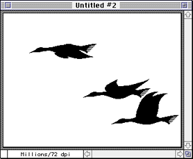

Figure 1: Tool palette with brush tool selected.
The brush is shaped like a bird in flight. The bird-shaped brush is an animated brush, made up of frames that flip each time you use the brush. The animated bird consists of 8 frames.
Note that the picture of the bird has been painted on the document, and the shape of the brush has changed. Each time you click the mouse button, the brush flips to the next frame of the brush.

Figure 2: Document showing Bird brush stamped twice; brush is active.